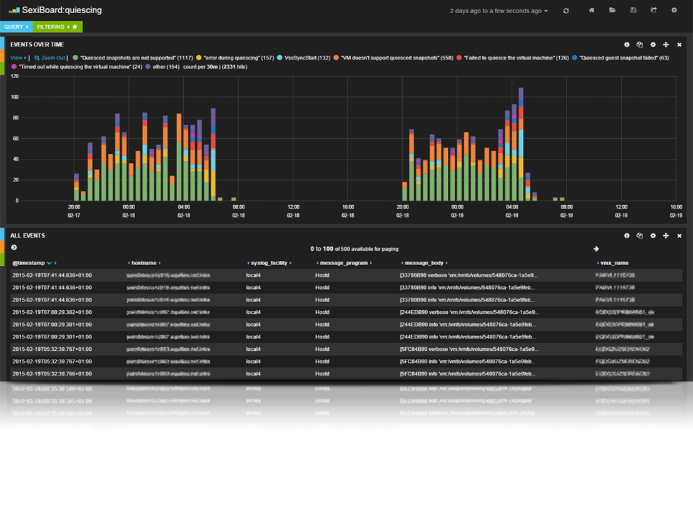
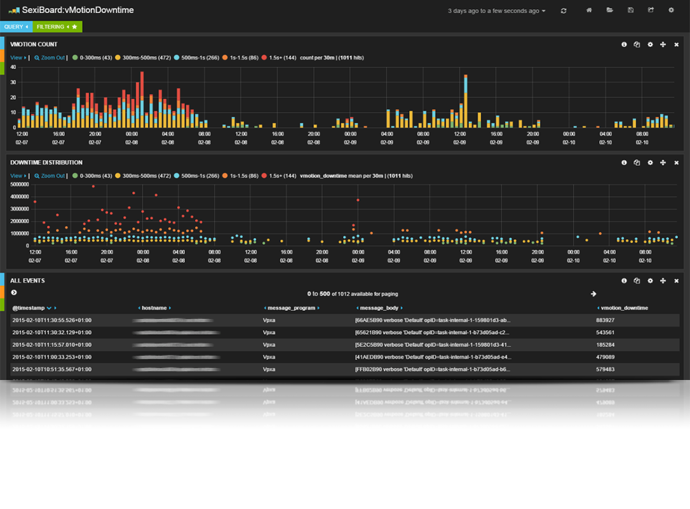
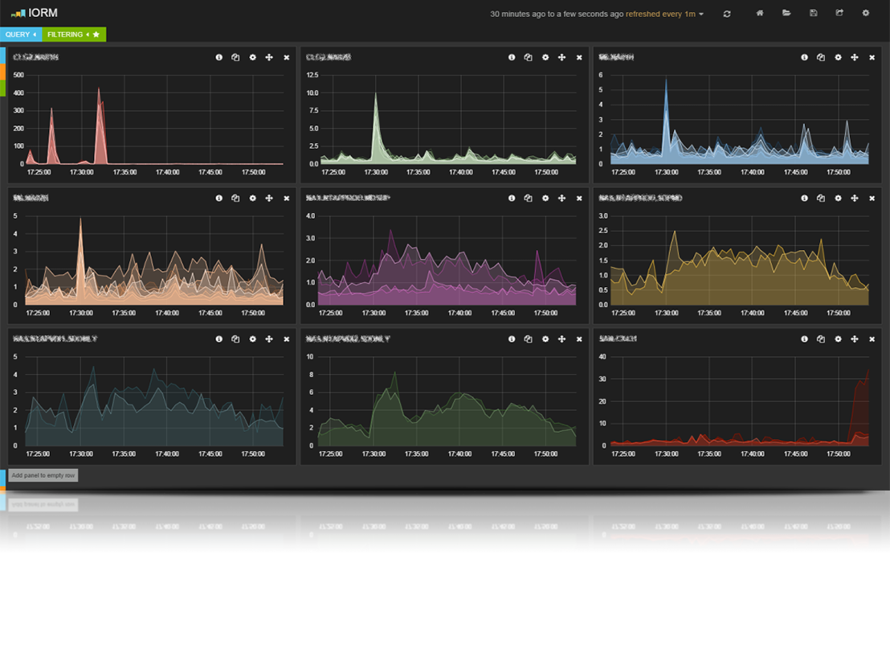
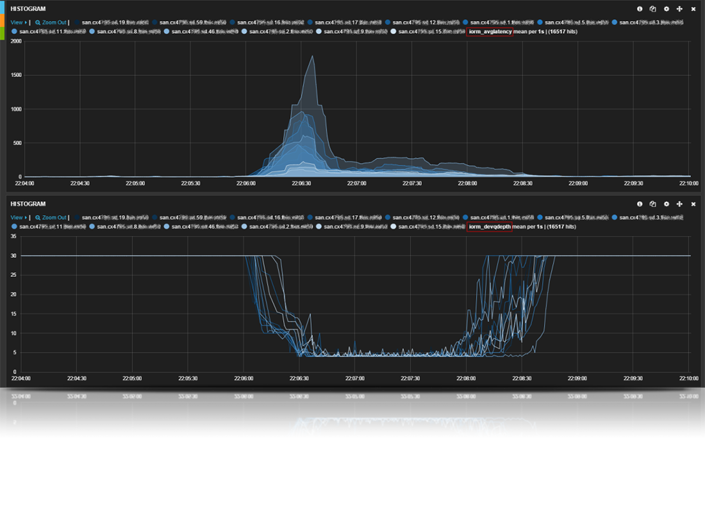
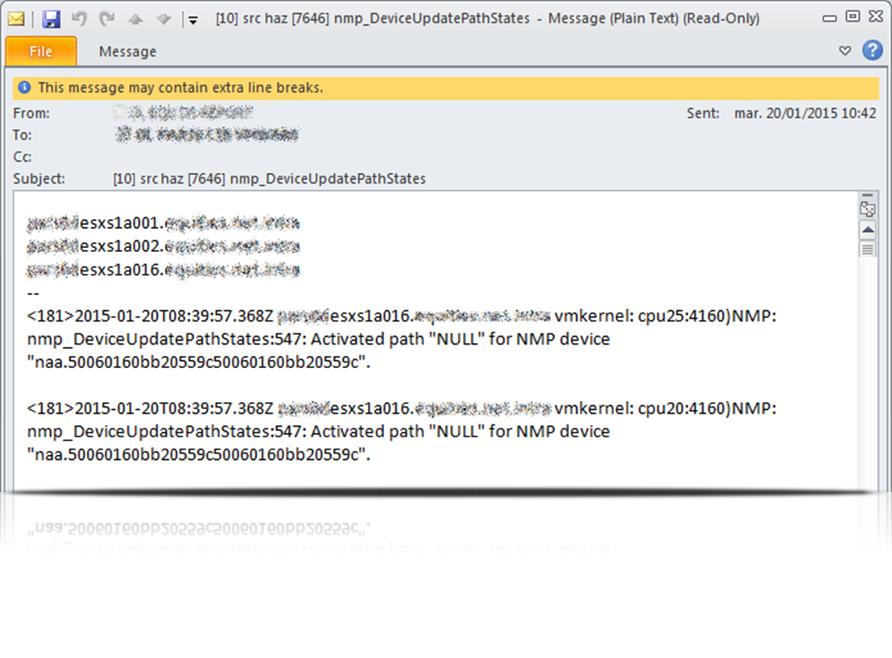
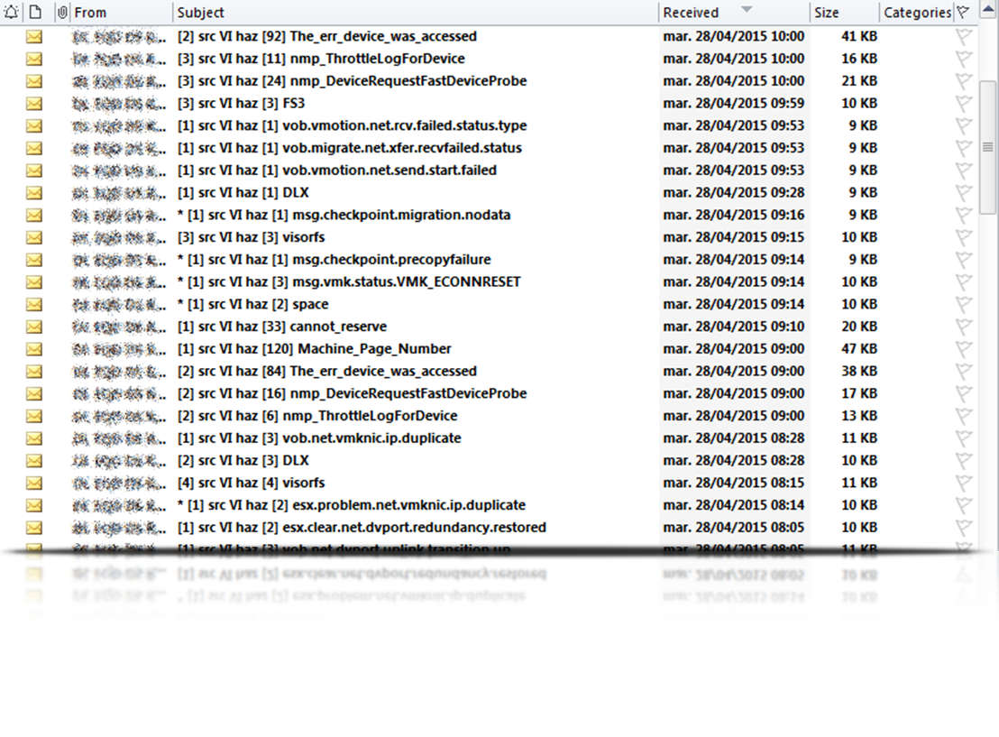
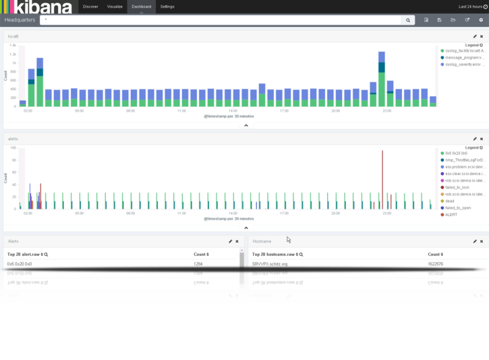
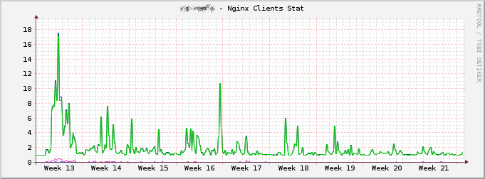

RFC 3164
“Since the beginning, life has relied upon the transmission of messages.”
“In many cases, these messages are informative to other units and require no acknowledgement.”
Who
Come get some on #sexilog (Twitter and IRC)
What
SexiLog is a specific ELK virtual appliance designed for vSphere environment. It’s pre-configured and heavily tuned for VMware ESXi logs. Once connected to your network, set SexiLog as syslog remote host and relax.
Put your speaker notes here.
You can see them pressing 's'.
Why
Nothing fit better
Single pane of glass
Correlation
Poor vCenter visualization
VIEvents vs SYSLOG = iceberg effect
How
Search
SexiBoards
Realtime monitoring
e-mail alerts
Snapshot quiesing issues

vMotion switchover time

Storage array latency

SIOC latency vs qdepth

Riemann notification

Riemann notification

Where
Kibana 4
Easy Updater
Alerts Dashboard
SexiLog to SexiLog (lumberjack)
SexiLog for XenApp/NetApp/...
Kibana4 Kommandantur

SexiStats
1000+ downloads in 3 days
3000+ downloads in 2 months
~20 downloads per day
